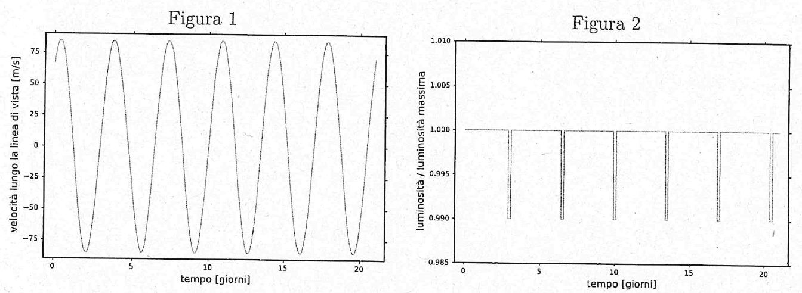

Pigkappa1 dic 2022, 21:43
1) Sicuramente vorrei vedere la curva di luce della stella, perche' fa molta differenza sapere se questa e' a forma di scalino, oppure a forma di funzione trigonometrica.
Sapendo solo che c'e' un minimo -V e un massimo +V e niente altro, possiamo immaginare una situazione molto semplice: attorno alla stella orbita un altro corpo (diciamo un pianeta, potrebbe essere una stella poco luminosa). La stella e il pianeta ruotano di moto circolare uniforme l'uno attorno all'altro. Il pianeta e' sulla nostra linea di vista e, quando passa davanti alla stella, ne oscura l'1% della superficie e quindi il sistema ci appare meno luminoso.
2)
Dato il periodo \(T=3.6 \text{days}\), \(m_s=1.1 M_\odot\), per la terza legge di Keplero: \(w^2 a^3 = G(m_s + m_p)\). Assumiamo che la massa del pianeta \(m_p\) sia molto minore di \(m_s\), allora il raggio dell'orbita del pianeta e' molto grande rispetto a quello della stella, e approssimativamente uguale a \(a_p \approx \big(\frac{T^2Gm_s}{4\pi^2}\big)^{1/3}=7.1\times 10^9 \text{m} = 0.047 \text{AU}\) dove AU = astronomical unit = distanza Terra - Sole. Il pianeta e' molto vicino alla stella, ma non cosi' tanto che la cosa sembri incredibile o necessariamente all'interno della stella stessa (raggio del Sole = \(7 \times 10^8 \text{m}\) se ricordo bene).
La velocita' massima della stella permette di stimare il raggio della sua orbita, \(V = \frac{2 \pi a_s}{T} \Rightarrow a_s = \frac{V*T}{2 \pi} = 4.0 \times 10^6 \text{m} \ll a_p\). L'accelerazione centripeta deriva dall'attrazione gravitazionale, quindi \(w^2 a_s \approx \frac{G*m_p}{a_p^2} \Rightarrow m_p = \frac{4 \pi^2 a_s a_p^2}{G*T^2} \approx 1.2 \times 10^{27}\) kg, una massa tipica di un grande pianeta.
Abbiamo quel che serve per calcolare la velocita' orbitale del pianeta, se sapessimo quanto dura il minimo di luminosita' potremmo cosi' stimare il raggio della stella, e allora da questo il raggio del pianeta, e quindi la sua densita', e quindi che tipo di pianeta e'... Ma con i dati che abbiamo non penso si possa fare altro.
Pigkappa2 dic 2022, 23:17
bosone ha scritto: ↑2 dic 2022, 12:51
Tuttavia non mi è chiaro se con la tua soluzione il pianeta ruota attorno alla stella come dici o se ruotano entrambi attorno al comune centro di massa M+m come hai scritto. Grazie ancora.
Ruotano attorno al centro di massa; ma, dato che il raggio dell'orbita del pianeta e' molto maggiore che quello della stella, non e' cosi' sbagliato neanche dire che il pianeta ruota attorno alla stella. Si dice comunemente che la Terra gira attorno al Sole, anche se ruotano in realta' attorno al centro di massa.

bosone ha scritto: ↑2 dic 2022, 12:51
un sistema binario di due stelle ruotanti attorno ad un fuoco comune dove era il CM. Il valor massimo misurato corrispondeva ad un estremo B dell'asse minore e il valor minimo all'altro estremo
Come avevo scritto sopra, anche io avevo considerato potesse essere un sistema di due stelle, ma poi i numeri che sono venuti fuori erano piu' adatti a stella + pianeta. Comunque, se ti chiedono il sistema piu' semplice, sicuramente lo devi immaginare in rotazione in moto circolare, non ellittico, e non devi preoccuparti di asse minore e asse maggiore. In particolare se la velocita' ha questo andamento sinusoidale, il moto deve essere circolare, non ellittico.
bosone ha scritto: ↑2 dic 2022, 12:51
Allora le ellissi sono una circonferenza di raggio a dove le due stelle si inseguono e l'eclisse avviene ogni periodo quando la seconda stella si interpone fra l'osservatore terrestre e la stella puntata. Sarebbe il sistema più semplice di cui chiede il testo. Dov'è il problema con questo procedimento? Che conoscendo il raggio e il periodo si può trovare la velocità della stella che risulta 2000 volte maggiore degli 80 m/s misurati!!!
Beh, questo e' equivalente a quel che viene a me, se fai il conto la velocita' orbitale del pianeta con i numeri sopra e' circa 2000 volte piu' grande di 80 m/s. I due corpi ruotano attorno al centro di massa comune, con lo stesso periodo, ma non con lo stesso raggio e non con la stessa velocita'
Data la descrizione e la curva di luce, comunque, stella+pianeta e' piu' plausibile di stella+stella. Se fosse stella+stella, e se queste fossero perfettamente allineate alla linea di vista, avremmo non uno ma due gradini nella curva di luce (di diversa profondita'), perche' avremmo un'altra eclisse quando la stella grande oscura la stella piccola.
Inoltre, qual e' uno scenario realistico che potrebbe aver generato il problema? Come fanno gli osservatori a sapere che c'e' una stella di massa \(1.1 M_\odot\)? Probabilmente hanno visto lo spettro, e cosi' facendo la hanno classificata, e la classificazione ti da' la massa. Se c'e' anche un pianeta vicino, questo non cambia lo spettro che vedi (forse a parte casi estremi, ad esempio se il pianeta e' molto vicino alla stella, ed ha una atmosfera densa). Ma se stiamo vedendo una stella doppia, dallo spettro ce ne accorgiamo facilmente.
Questo tipo di problema non e' raro, era a Senigallia 2003 come stella+pianeta, IPHO 2007 come stella+stella.